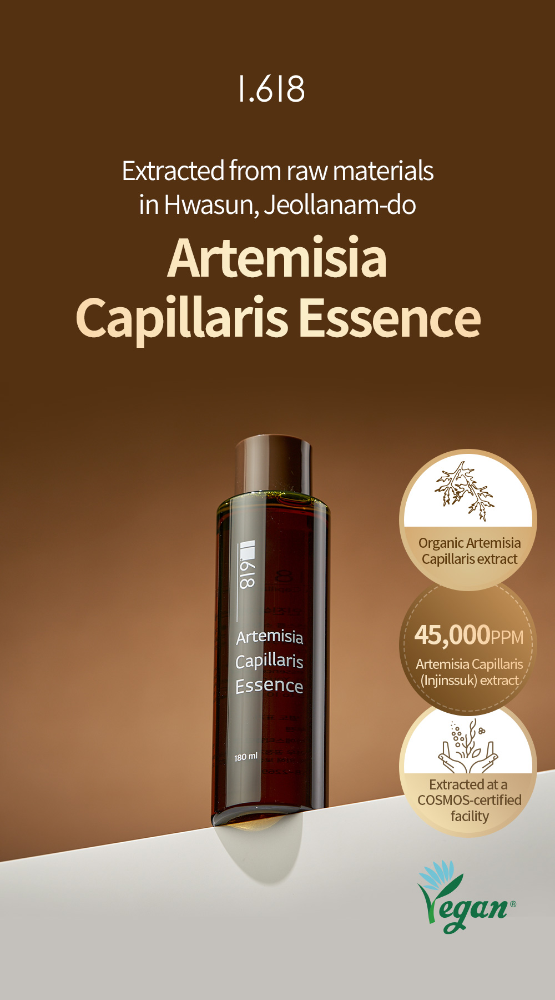
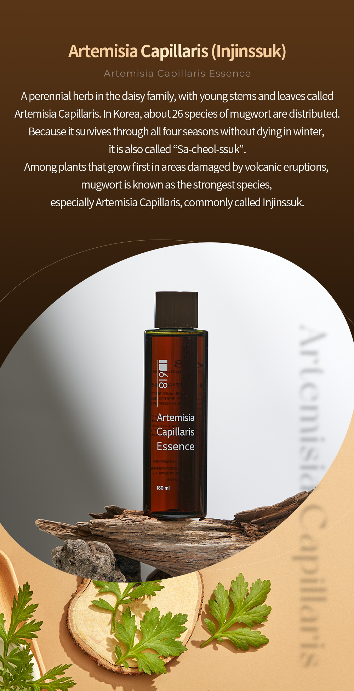
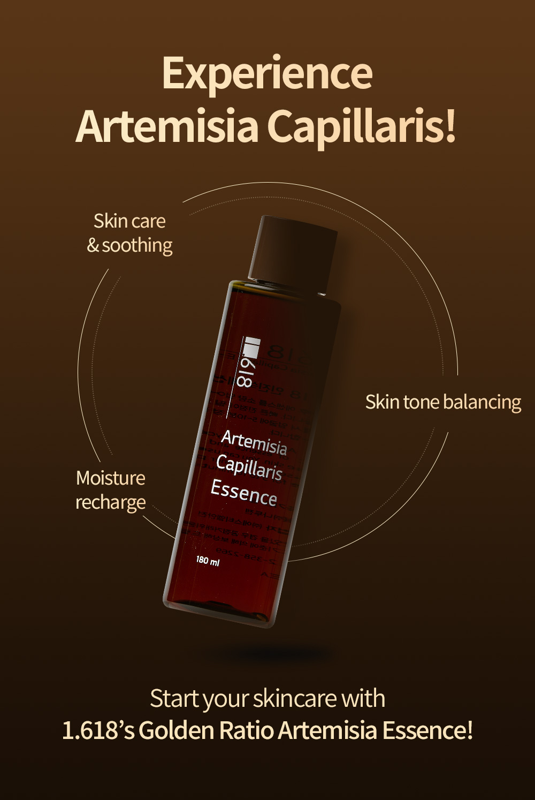

Artemisia Capillaris Essence
Essence, 180 ml / 6.08 fl oz
A four-ingredient essence made with artemisia capillaris (mugwort) extract. Smooth it on after cleansing, or soak a cotton pad and leave it on for 5 to 10 minutes when skin needs quick soothing.
Key Benefits:
- Just four ingredients
- Artemisia capillaris (mugwort) extract
- Soothes and hydrates sensitive skin
- No added fragrance
Key Ingredients
- Artemisia capillaris (mugwort) extract: Artemisia Capillaris Extract
How to Use
After cleansing, spread a small amount evenly over the skin. When skin needs quick soothing, soak a cotton pad with the essence and place it on the face for 5 to 10 minutes.
Full Ingredients
Water, Pentylene Glycol, Artemisia Capillaris Extract, Caprylyl Glycol
FAQ
How many ingredients does it have?
Four: water, pentylene glycol, artemisia capillaris extract and caprylyl glycol.
Does it contain fragrance?
No. There is no fragrance in the ingredient list.
Can I use it as a cotton pad pack?
Yes. Soak a cotton pad with the essence and leave it on the face for 5 to 10 minutes.
Where can I buy it in the US?
On Amazon US. The Buy on Amazon button on this page opens the product listing.
Where is it made?
In Korea.
How long can I use it after opening?
Use it within 12 months after opening.
Caution
- Stop use and talk to a dermatologist if redness, swelling, itching or other irritation appears during or after use, including after exposure to direct sunlight.
- Do not apply to broken or damaged skin.
- Keep out of reach of children. Store away from direct sunlight.
Product Details





